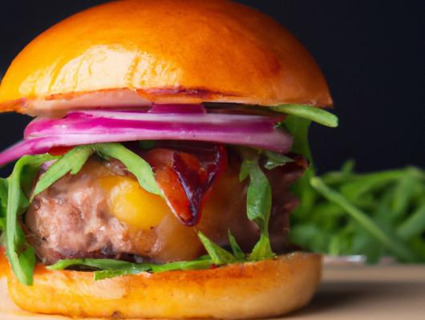

The Ultimate All-American Cheeseburger

About this burger
Get ready to experience the ultimate blend of flavors and textures with this All-American Cheeseburger recipe. This recipe takes the classic cheeseburger to new heights with a juicy beef patty, melty cheese, and tangy sauce. This burger is sure to satisfy your cravings and leave you wanting more.
Ingredients
For the burger patties:
- 1 ½ pounds ground beef (80% lean, 20% fat)
- 1 teaspoon kosher salt
- ½ teaspoon freshly ground black pepper
For the burger assembly:
- 4 burger buns, preferably brioche or sesame seed
- 4 slices of American cheese
- 8 slices of crispy bacon
- 1 large tomato, sliced
- 1 red onion, thinly sliced
- 4 leaves of lettuce (e.g., iceberg or romaine)
- Pickles (optional)
For the special sauce:
- ½ cup mayonnaise
- 2 tablespoons ketchup
- 1 tablespoon yellow mustard
- 1 tablespoon sweet pickle relish
- 1 teaspoon Worcestershire sauce
- 1 teaspoon garlic powder
- Salt and pepper to taste
Preparation
- Preheat your grill or stovetop griddle to medium-high heat.
- In a mixing bowl, combine the ground beef, kosher salt, and black pepper. Gently mix everything together, being careful not to overwork the meat. Form the mixture into four equal-sized patties, slightly larger than the burger buns, and make an indentation in the center of each patty to prevent it from puffing up while cooking.
- Grill the burger patties for about 4-5 minutes per side or until they reach your desired level of doneness. During the last minute of cooking, top each patty with a slice of American cheese and allow it to melt.
- While the patties are cooking, toast the burger buns on the grill until they are lightly golden and slightly crispy.
- In a small bowl, whisk together the mayonnaise, ketchup, yellow mustard, sweet pickle relish, Worcestershire sauce, garlic powder, salt, and pepper. This will be your special sauce.
- Assemble your burgers: Spread a generous amount of the special sauce on the bottom half of each toasted bun. Place a lettuce leaf on top of the sauce, followed by a tomato slice. Next, add a cheese-topped burger patty and two slices of crispy bacon. Top it all off with some red onion slices and pickles if desired. Finally, place the top half of the bun on the toppings.
- Serve the All-American Cheeseburger Delight with your favorite side dishes, such as French fries, coleslaw, or a crisp green salad.
- Enjoy the mouthwatering flavors and textures of this All-American Cheeseburger Delight, a true culinary masterpiece that will have your taste buds dancing with joy!